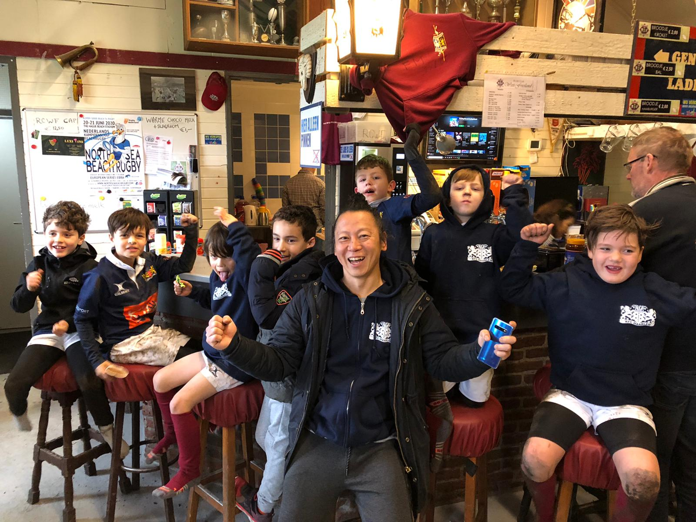
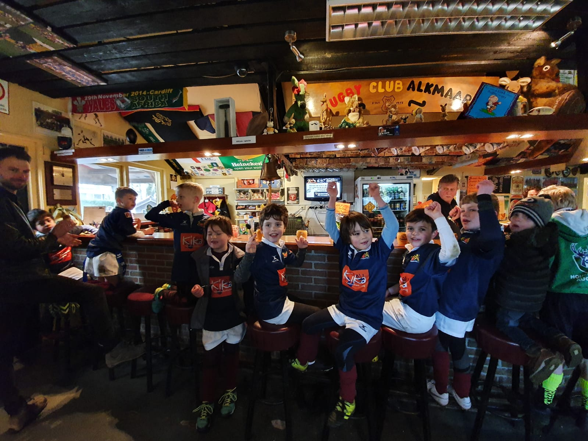

29 februari 2020
Haarlem
Helaas was ik ziek. Gelukkig dankzij de ouders en vader van Timothy toch nog een coach op het veld, dank daarvoor!
We speelden tegen Amsterdam en Amstelveen (twee teams). Ik hoorde dat er heel goed op lijn is verdedigd. Zo goed zelfs dat de trainer van Amsterdam daar complimenten voor gaf!
De uitslagen: 1x winst, 1x gelijk en 1x verlies.
8 februari 2020
Haarlem
We speelden tegen Amsterdam, de Hawks en de Haarlem Bulls. We hebben nog nooit tegen de Hawks gespeeld dus heel leuk om eens te zien hoe goed of slecht we nou eigenlijk zijn.
De Bizons hadden allemaal een eigen opdracht: jagen in koppeltjes, niet achteruit lopen, vaker/eerder overspelen, etc. En als team hadden ze de opdracht om op lijn te verdedigen en als een lijn op te lopen.
De eerste wedstrijd was tegen Amsterdam. Een oude bekende, we speelden eind januari namelijk in Amsterdam (drie keer winst). Dit keer was het weer een makkelijke wedstrijd, al doet de uitslag vermoeden dat het spannend was (5-4 winst). Op lijn verdedigen ging heel goed. Amsterdam wist af en toe niet hoe ze er door moesten komen.
De tweede wedstrijd dan eindelijk tegen een nieuwe tegenstander! Helaas viel dat een beetje tegen. De Hawks werden eenvoudig met 6-2 aan de kant gezet. Wederom heel goed op lijn verdedigd en een paar keer 5-tags dus bal weer voor ons! En, Resa heeft haar derde try ooit gescoord!
De laatste wedstrijd tegen de Bulls. We hebben nog nooit van ze verloren en ook dit keer gebeurde dat niet (6-4). En Kick heeft volgens mij zijn zesde try ooit gescoord! De vader van Samuel heeft mooie opnames gemaakt vanaf de balustrade. Die worden binnenkort toegevoegd!
1 februari 2020
Hoorn
Modderbad in Hoorn! Wat een heerlijk veld was het :) Op lijn verdedigen gaat steeds beter. Tegen Westfriesland zelfs de eerste helft de 0 gehouden! En dus warme chocomelk verdiend! En, een nieuwe Bizon: Samuel!
Winst tegen Amstelveen, Waterland en Westfriesland. Met een ontketende Kick die 4 try's maakte. Resa trouwens haar tweede try! En Samuel die in zijn eerste rugbywedstrijd gelijk try's maakte. Super goed gedaan!
25 januari 2020
Amsterdam
We hebben geoefend met op lijn verdedigen en dat kun je in de wedstrijden terug zien. Hartstikke goed gedaan Bizons!
Drie keer winst tegen Amsterdam (2x) en Houtsche.
18 januari 2020
Haarlem
En na Resa is ook Kick los! Zijn eerste try ooit!
Winst tegen Houtsche, Amstelveen en Castricum.
11 januari 2020
Alkmaar
De exacte score niet bijgehouden. Wel drie keer winst. Met een speciale vermelding voor Resa die haar eerste try ooit maakte!
Winst tegen Alkmaar, Castricum en Houtsche.
Super om te zien hoe het hele team over het veld rende om Resa toe te juichen met haar eerste try! Na afloop een verdiende warme choco!
14 december 2019
ARC Amstelveen
Refs wilden de stand niet bijhouden ("iedereen is een winnaar"). We hebben in elk geval 3x gewonnen :)
Twee keer winst tegen Amstelveen en de laatste wedstrijd nipt gewonnen van de Bulls.
7 december 2019
Zaandijk
Helaas afgelast...
30 november 2019
ARC Amstelveen
Uitslagen
Winst tegen Alkmaar: 11 - 7.
Winst tegen de Haarlem Bulls: 6 - 4.
Winst tegen Alkmaar: 10 - 7.
Winst tegen Westfriesland: 9 - 5.
23 november 2019
Westfriesland Hoorn
Uitslagen
Winst tegen Alkmaar: 11 - 7.
Winst tegen de Haarlem Bulls: 6 - 4.
Winst tegen Alkmaar: 10 - 7.
Winst tegen Westfriesland: 9 - 5.
16 november 2019
Haarlem
Voor het eerst verloren! Wel een beetje mijn schuld, want ik had ze de opdracht gegeven minimaal 3 keer te passen. En dat was best wel wennen :)
Winst tegen Zaandijk: 6 - 4.
Winst tegen Houtsche: 8 - 6.
Verlies tegen Amstelveen: 4 - 6.
9 november 2019
Tiel
Bondsdag in Tiel!
Gelijk tegen Den Haag: 6 - 6.
Winst tegen Nijmegen: 10 - 6.
Winst tegen Enschede: 10 - 6.
12 oktober 2019
Hoorn werd Purmerend
Velden in Hoorn waren afgelast dus zijn we mee gaan spelen bij de andere turven in Purmerend!
Winst tegen Amstelveen: 6 - 3.
Winst tegen Amsterdam: 8 - 4.
Gelijk tegen Waterland: 5 - 5.
5 oktober 2019
Zaandijk
Uitslagen
Winst tegen Alkmaar: 4 - 2.
Winst tegen Waterland: 3 - 2.
Winst tegen Zaandijk: 5 - 4.
Winst tegen de Haarlem Bulls: 6 - 3.
28 september 2019
Haarlem
Uitslagen
Winst tegen Castricum: 4 - 2.
Winst tegen Houtsche: 5 - 4.
Winst tegen Waterland: 5 - 4.
21 september 2019
Alkmaar
Eerste wedstrijden van de Beukende Bizons
Winst tegen Castricum: 6 - 2.
Winst tegen Castricum: 5 - 1.
Winst tegen Alkmaar: 6 - 2.